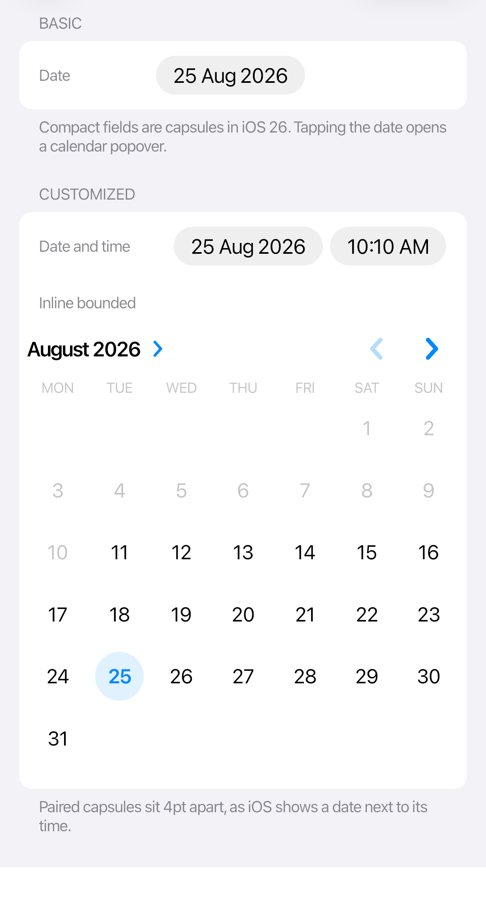
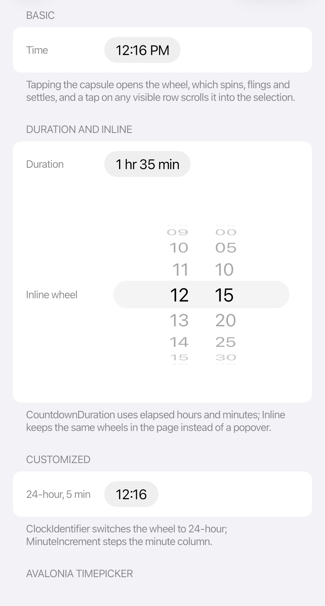

Pickers and calendar
Cupertino pickers can appear as compact fields or inline editors. Tapping a compact field opens a calendar or wheel popover.
Popovers move keyboard focus into their content, cycle focus with Tab and Shift+Tab, and close with Escape. Closing restores the previous focus when it still belongs to the same window.
 |
 |
<StackPanel xmlns:cupertino="https://cupertino.avaloniaui.net" Spacing="12">
<cupertino:CupertinoDatePicker SelectedDate="{Binding StartDate}"
MinimumDate="{Binding EarliestDate}"
MaximumDate="{Binding LatestDate}" />
<cupertino:CupertinoTimePicker SelectedTime="{Binding StartTime}"
MinuteIncrement="5" />
<cupertino:CupertinoDateTimePicker SelectedDateTime="{Binding Appointment}" />
</StackPanel>
Inline and duration modes
<StackPanel Spacing="16">
<cupertino:CupertinoDatePicker DisplayMode="Inline"
SelectedDate="{Binding Date}" />
<cupertino:CupertinoTimePicker DisplayMode="Inline"
Mode="CountdownDuration"
SelectedTime="{Binding Duration}"
MinuteIncrement="5" />
</StackPanel>
Set ClockIdentifier to 12HourClock for an AM/PM wheel or 24HourClock for a 24-hour wheel when the design must override the current culture; any other value also selects the 24-hour clock. Otherwise, leave it unset and let the picker follow the user’s locale.
Date pickers treat MinimumDate and MaximumDate as local calendar dates. Their calendars expand to include the selection and any date bounds you set.
The combined date-time picker treats Minimum and Maximum as absolute points in time, accounting for the selected UTC offset. Rounding to a minute increment keeps the value within those bounds.
Use CupertinoCalendarView to display a calendar directly in your page.